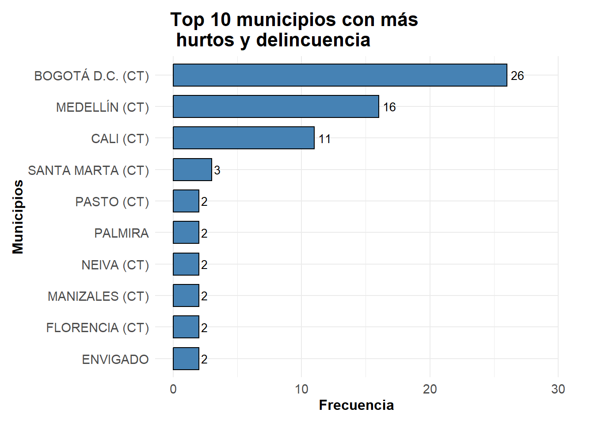

Análisis descriptivo del conjunto de datos
Descripción de tendencias y situaciones clave del conjunto de datos
Análisis exploratorio inicial
Análisis Estadístico Descriptivo para la variable EDAD
Media
suma_edades <- sum(hurtos2$EDAD, na.rm = TRUE) # suma de las edades considerando sus frecuencias absolutas
numero_edades <- sum(!is.na(hurtos2$EDAD)) #Cantidad total de datos
media_edad <- suma_edades / numero_edades #Fórmula teórica para el cálculo de la media
print(media_edad)## [1] 35.87Mediana
edades_ordenadas <- sort(hurtos2$EDAD, na.last = NA) # se organizan las edades de menor a mayor
n <- length(edades_ordenadas)
#se crea la variable mediana y se formula un condicional dependiendo si la cantidad total de datos es par o impar
mediana_edad <- if (n %% 2 == 1) {
edades_ordenadas[(n + 1) / 2]
} else {
(edades_ordenadas[n / 2] + edades_ordenadas[(n / 2) + 1]) / 2
}
print(mediana_edad)## [1] 35Moda
# Definimos una función para calcular la moda
moda <- function(x) {
frecuencias <- table(x)
moda <- as.numeric(names(frecuencias[frecuencias == max(frecuencias)]))
return(moda)
}
moda_edad <- moda(hurtos2$EDAD)# Calculamos la moda de la columna 'EDAD'
print(moda_edad)## [1] 31Dado una moda de 31, una media de 35.87 y una mediana de 35, podemos analizar la asimetría de la distribución de los datos de la siguinte forma:
Media (35.87) > Mediana (35) > Moda (31): Esto indica una asimetría positiva o sesgo a la derecha. En otras palabras, la cola de la distribución se extiende más hacia la derecha.La asimetría positiva sugiere que hay valores extremos altos que están influyendo en la media, haciendo que sea mayor que la mediana y la moda. En términos prácticos, una asimetría positiva puede indicar que hay algunos individuos con edades significativamente mayores que la mayoría del grupo, lo que está afectando la media.Rango
## [1] 65Varianza
varianza_edad <- var(hurtos2$EDAD, na.rm = TRUE)# se emplea la función de varianza muestral
print(varianza_edad)## [1] 206.1344Desviación estándar
## [1] 14.35738Coeficiente de variación
## [1] 40.02616
Ya teniendo una cierta noción sobre la dispersión de los datos y
sus medidas de tendencia central, se procederá a realizar en mayor
profundidad el análisis de asimetría. Como ya se había mencionado
previamente, con base a los resultados de las medidas de tendencia
central, entre las edades se presenta una asimetría positiva, puesto que
la media es mayor a la moda y a la mediana, indicando que la cola de la
distribución de los datos se extiende más hacia la derecha. Para
corroborar este hecho, se procederá a calcular el coeficiente de
asimetría de la siguiente forma:
coeficiente_asimetria <- (3 * (media_edad - mediana_edad)) / desviación_edad
print(coeficiente_asimetria)## [1] 0.181788El gráfico muestra un histograma combinado con una curva de densidad
que representa la distribución de las edades de las víctimas de hurto.
Como se observa, la distribución de las edades es asimétrica hacia la
derecha, lo que significa que la cola en el lado derecho (hacia edades
mayores) es más larga que en el lado izquierdo. Esto indica que hay
menos víctimas en los rangos de edad más avanzados, pero esas pocas se
extienden hacia edades más altas. Por otro lado, a mayor parte de los
datos se concentra en el lado izquierdo del gráfico, es decir, en las
edades más jóvenes. Este análisis sugiere que los jóvenes adultos son
los más afectados por el hurto, lo que podría ser útil para diseñar
estrategias de prevención específicas para este grupo de edad. Con lo
que respecta a la dispersión,esta es amplia, cubriendo un rango que va
desde aproximadamente 14 años hasta 84 años. Esto indica que hay una
considerable variabilidad en las edades de los individuos representados.
Sin embargo, la dispersión no es uniforme; hay una clara concentración
de individuos en el rango de 28 a 35 años, donde se observa la mayor
densidad en el histograma. A medida que nos alejamos de este rango
central, tanto hacia edades más jóvenes como hacia edades más avanzadas,
la frecuencia de individuos disminuye. Esto significa que, aunque la
dispersión total abarca un amplio rango de edades, la mayor parte de los
individuos se agrupan en torno a un rango más estrecho de edades
jóvenes-adultas, lo que también se refleja en la forma de la curva de
densidad, que desciende gradualmente a medida que la edad aumenta,
evidenciando una menor presencia de individuos en edades avanzadas.
Análisis Estadístico Descriptivo para la variable ESTARURA_AGRESOR
Media
suma_estatura <- sum(hurtos2$ESTATURA_AGRESOR, na.rm = TRUE) # suma de las estaturas considerando sus frecuencias absolutas
numero_estatura <- sum(!is.na(hurtos2$ESTATURA_AGRESOR)) #Cantidad total de datos
media_estatura <- suma_estatura / numero_estatura #Fórmula teórica para el cálculo de la media
print(media_estatura)## [1] 167.488Mediana
estaturas_ordenadas <- sort(hurtos2$ESTATURA_AGRESOR, na.last = NA) # se organizan las estaturas de menor a mayor
n <- length(estaturas_ordenadas)
#se crea la variable mediana y se formula un condicional dependiendo si la cantidad total de datos es par o impar
mediana_estaturas <- if (n %% 2 == 1) {
estaturas_ordenadas[(n + 1) / 2]
} else {
(estaturas_ordenadas[n / 2] + estaturas_ordenadas[(n / 2) + 1]) / 2
}
print(mediana_estaturas)## [1] 167.3Moda
# Definimos una función para calcular la moda
encontar_moda <- function(x) {
u <- unique(x)
tab <- tabulate(match(x, u))
u[tab == max(tab)]
}
moda_estaturas <- encontar_moda(hurtos2$ESTATURA_AGRESOR)
print(moda_estaturas)## [1] 178.0 165.9 177.3 168.1 162.7 172.1 158.2Rango
rango_estatura <- max(hurtos2$ESTATURA_AGRESOR, na.rm = TRUE) - min(hurtos2$ESTATURA_AGRESOR, na.rm = TRUE)
print(rango_estatura)## [1] 84.6Varianza
varianza_estatura <- var(hurtos2$ESTATURA_AGRESOR, na.rm = TRUE)# se emplea la función de varianza muestral
print(varianza_edad)## [1] 206.1344Desviación estándar
## [1] 14.85912Coeficiente de variación
coeficiente_variacion_estatura <- (desviación_estatura/ media_estatura) * 100
print(coeficiente_variacion_estatura)## [1] 8.871751coeficiente_asimetria_estatura <- (3 * (media_estatura - mediana_estaturas)) /desviación_estatura
print(coeficiente_asimetria_estatura)## [1] 0.03795649
Distribución de frecuencias
1. Variables cualitativas
1.1 Nominales
1.1.1 Departamentos
Tabla de frecuencias de departamentos
| DEPARTAMENTO | \(f_i\) | \(h_i\) | \(p_i\) |
|---|---|---|---|
| ANTIOQUIA | 22 | 0.22 | 22% |
| ARAUCA | 1 | 0.01 | 1% |
| ATLÁNTICO | 1 | 0.01 | 1% |
| BOYACÁ | 1 | 0.01 | 1% |
| CALDAS | 3 | 0.03 | 3% |
| CAQUETÁ | 2 | 0.02 | 2% |
| CASANARE | 2 | 0.02 | 2% |
| CAUCA | 3 | 0.03 | 3% |
| CESAR | 1 | 0.01 | 1% |
| CHOCÓ | 1 | 0.01 | 1% |
| CUNDINAMARCA | 27 | 0.27 | 27% |
| CÓRDOBA | 1 | 0.01 | 1% |
| HUILA | 3 | 0.03 | 3% |
| MAGDALENA | 3 | 0.03 | 3% |
| META | 2 | 0.02 | 2% |
| NARIÑO | 2 | 0.02 | 2% |
| NORTE DE SANTANDER | 1 | 0.01 | 1% |
| QUINDÍO | 2 | 0.02 | 2% |
| RISARALDA | 2 | 0.02 | 2% |
| SANTANDER | 3 | 0.03 | 3% |
| SUCRE | 1 | 0.01 | 1% |
| TOLIMA | 2 | 0.02 | 2% |
| VALLE | 14 | 0.14 | 14% |
| Total | 100 | 1.00 | 100% |
Diagrama descriptivo de departamentos

1.1.2 Municipios
Tabla de frecuencias de municipios
| MUNICIPIO | \(f_i\) | \(h_i\) | \(p_i\) |
|---|---|---|---|
| ARMENIA (CT) | 1 | 0.01 | 1% |
| BARRANQUILLA (CT) | 1 | 0.01 | 1% |
| BOGOTÁ D.C. (CT) | 26 | 0.26 | 26% |
| BOSCONIA | 1 | 0.01 | 1% |
| BUCARAMANGA (CT) | 1 | 0.01 | 1% |
| CALARCA | 1 | 0.01 | 1% |
| CALI (CT) | 11 | 0.11 | 11% |
| CAMPOALEGRE | 1 | 0.01 | 1% |
| CAREPA | 1 | 0.01 | 1% |
| CARTAGO | 1 | 0.01 | 1% |
| CERETÉ | 1 | 0.01 | 1% |
| CHINCHINÁ | 1 | 0.01 | 1% |
| CÚCUTA (CT) | 1 | 0.01 | 1% |
| EL TAMBO | 1 | 0.01 | 1% |
| ENVIGADO | 2 | 0.02 | 2% |
| FLORENCIA (CT) | 2 | 0.02 | 2% |
| GIRARDOTA | 1 | 0.01 | 1% |
| GIRÓN | 1 | 0.01 | 1% |
| IBAGUÉ (CT) | 1 | 0.01 | 1% |
| ITUANGO | 1 | 0.01 | 1% |
| MANIZALES (CT) | 2 | 0.02 | 2% |
| MEDELLÍN (CT) | 16 | 0.16 | 16% |
| MELGAR | 1 | 0.01 | 1% |
| NEIVA (CT) | 2 | 0.02 | 2% |
| PALMIRA | 2 | 0.02 | 2% |
| PASTO (CT) | 2 | 0.02 | 2% |
| PEREIRA (CT) | 2 | 0.02 | 2% |
| POPAYÁN (CT) | 2 | 0.02 | 2% |
| RIONEGRO | 1 | 0.01 | 1% |
| SAN GIL | 1 | 0.01 | 1% |
| SANTA MARTA (CT) | 3 | 0.03 | 3% |
| SINCELEJO (CT) | 1 | 0.01 | 1% |
| SOACHA | 1 | 0.01 | 1% |
| TADÓ | 1 | 0.01 | 1% |
| TAME | 1 | 0.01 | 1% |
| TUNJA (CT) | 1 | 0.01 | 1% |
| VILLAVICENCIO (CT) | 2 | 0.02 | 2% |
| YOPAL (CT) | 2 | 0.02 | 2% |
| Total | 100 | 1.00 | 100% |
Diagrama descriptivo de municipios
1.1.3 Arma empleada
Tabla de frecuencias de armas empleadas
| ARMA EMPLEADA | \(f_i\) | \(h_i\) | \(p_i\) |
|---|---|---|---|
| ARMA BLANCA | 21 | 0.21 | 21% |
| ARMA DE FUEGO | 18 | 0.18 | 18% |
| CONTUNDENTES | 13 | 0.13 | 13% |
| CORTANTES | 1 | 0.01 | 1% |
| NO REPORTADO | 1 | 0.01 | 1% |
| SIN EMPLEO DE ARMAS | 46 | 0.46 | 46% |
| Total | 100 | 1.00 | 100% |

Diagrama descriptivo de armas empleadas
1.1.4 Móvil agresor
Tabla de frecuencia móvil agresor
| MOVIL AGRESOR | \(f_i\) | \(h_i\) | \(p_i\) |
|---|---|---|---|
| A PIE | 79 | 0.79 | 79% |
| CONDUCTOR MOTOCICLETA | 8 | 0.08 | 8% |
| PASAJERO BUS | 3 | 0.03 | 3% |
| PASAJERO MOTOCICLETA | 8 | 0.08 | 8% |
| VEHICULO | 2 | 0.02 | 2% |
| Total | 100 | 1.00 | 100% |
Diagrama descriptivo de móvil del agresor

1.1.5 Móvil victima
Tabla de frecuencia móvil victima
| MOVIL VICTIMA | \(f_i\) | \(h_i\) | \(p_i\) |
|---|---|---|---|
| A PIE | 78 | 0.78 | 78% |
| BICICLETA | 2 | 0.02 | 2% |
| CONDUCTOR BUS | 1 | 0.01 | 1% |
| CONDUCTOR MOTOCICLETA | 4 | 0.04 | 4% |
| PASAJERO BUS | 2 | 0.02 | 2% |
| PASAJERO MOTOCICLETA | 2 | 0.02 | 2% |
| PASAJERO TAXI | 1 | 0.01 | 1% |
| VEHICULO | 10 | 0.10 | 10% |
| Total | 100 | 1.00 | 100% |
Diagrama descriptivo del móvil de la victima
1.1.6 Sexo
Tabla de frecuencia de sexos
| SEXO | \(f_i\) | \(h_i\) | \(p_i\) |
|---|---|---|---|
| FEMENINO | 36 | 0.36 | 36% |
| MASCULINO | 64 | 0.64 | 64% |
| Total | 100 | 1.00 | 100% |
Diagrama descriptivo de los sexos
1.1.7 Captura del agresor
Tabla de frecuencia de agresores capturados
| CAPTURADO | \(f_i\) | \(h_i\) | \(p_i\) |
|---|---|---|---|
| NO | 17 | 0.17 | 17% |
| SI | 83 | 0.83 | 83% |
| Total | 100 | 1.00 | 100% |
Gráfico descriptivo de los agresores capturados
1.2 Ordinales
1.2.1 Categorias de agresión por gravedad
Tabla de frecuencia por categorias de gravedad
| CATEGORIA | \(f_i\) | \(F_i\) | \(h_i\) | \(p_i\) | \(H_i\) | \(P_i\) |
|---|---|---|---|---|---|---|
| Muy Alto | 1 | 1 | 0.01 | 1% | 0.01 | 1% |
| Alto | 7 | 8 | 0.07 | 7% | 0.08 | 8% |
| Medio | 30 | 38 | 0.30 | 30% | 0.38 | 38% |
| Bajo | 48 | 86 | 0.48 | 48% | 0.86 | 86% |
| Muy Bajo | 14 | 100 | 0.14 | 14% | 1.00 | 100% |
Diagrama descriptivo por categorias de gravedad

1.2.2 Robos según días de la semana
tabla de frecuencia de hurtos por días de la semana
## Rows: 100 Columns: 13
## ── Column specification ────────────────────────────────────────────────────────
## Delimiter: ","
## chr (10): DEPARTAMENTO, MUNICIPIO, DIA, ZONA, ARMA EMPLEADA, MOVIL AGRESOR,...
## dbl (2): EDAD, ESTATURA_AGRESOR
## time (1): HORA
##
## ℹ Use `spec()` to retrieve the full column specification for this data.
## ℹ Specify the column types or set `show_col_types = FALSE` to quiet this message.| DIA | \(f_i\) | \(F_i\) | \(h_i\) | pi | \(H_i\) | \(P_i\) |
|---|---|---|---|---|---|---|
| Lunes | 11 | 11 | 0.11 | 11% | 0.11 | 11% |
| Martes | 10 | 21 | 0.10 | 10% | 0.21 | 21% |
| Miércoles | 10 | 31 | 0.10 | 10% | 0.31 | 31% |
| Jueves | 18 | 49 | 0.18 | 18% | 0.49 | 49% |
| Viernes | 24 | 73 | 0.24 | 24% | 0.73 | 73% |
| Sábado | 17 | 90 | 0.17 | 17% | 0.90 | 90% |
| Domingo | 10 | 100 | 0.10 | 10% | 1.00 | 100% |
Diagrama descriptivo de cantidad de hurtos por días de la semana

2. Variables cuantitativas
2.1 Discretas
2.1.1 Edades de las victimas
## Cálculos previos a la tabla de frecuencia por intervalos
edades_frec<-hurtos2$EDAD #Establecemos la columna a estudiar
## Cálculo de rango
valor_maximo<- max(edades_frec, na.rm = TRUE)
valor_maximo## [1] 79## [1] 14## [1] 65## [1] 10## Cálculo de la amplitud de los intervalos
amplitud_intervalos <- ceiling(rango / num_intervalos)
amplitud_intervalos## [1] 7Tabla de frecuencias de las edades de las victimas por intervalo
| \(li-ls\) | \(X_i\) | \(f_i\) | \(h_i\) (%) | \(F_i\) | \(H_i\) (%) |
|---|---|---|---|---|---|
| [14 - 21) | 17.5 | 16 | 16 | 16 | 16 |
| [21 - 28) | 24.5 | 17 | 17 | 33 | 33 |
| [28 - 35) | 31.5 | 21 | 21 | 54 | 54 |
| [35 - 42) | 38.5 | 14 | 14 | 68 | 68 |
| [42 - 49) | 45.5 | 18 | 18 | 86 | 86 |
| [49 - 56) | 52.5 | 5 | 5 | 91 | 91 |
| [56 - 63) | 59.5 | 5 | 5 | 96 | 96 |
| [63 - 70) | 66.5 | 1 | 1 | 97 | 97 |
| [70 - 77) | 73.5 | 2 | 2 | 99 | 99 |
| [77 - 84) | 80.5 | 1 | 1 | 100 | 100 |
Diagrama descriptivo de robos por edades
2.2 Continuas
2.2.1 Estatura de los agresores
## Cálculos previos a la tabla de frecuencia por intervalos
estatura_frec<-hurtos2$ESTATURA_AGRESOR #Establecemos la columna a estudiar
## Cálculo de rango
valor_maximo_estatura<- max(estatura_frec, na.rm = TRUE)
valor_maximo_estatura## [1] 207.8## [1] 123.2## [1] 84.6## Cálculo del número de intervalos
num_intervalos_estatura<-round((1+3.322*log10(length(estatura_frec))),0)
num_intervalos_estatura## [1] 8## Cálculo de la amplitud de los intervalos
amplitud_intervalos_estatura <-(rango_estatura/num_intervalos_estatura)
amplitud_intervalos_estatura## [1] 10.575Tabla de frecuencias de las estaturas de los agresores por intervalos
| \(li-ls\) | \(X_i\) | \(f_i\) | \(h_i\) (%) | \(F_i\) | \(H_i\) (%) |
|---|---|---|---|---|---|
| [123.2 - 133.775) | 128.4875 | 2 | 2 | 2 | 2 |
| [133.775 - 144.35) | 139.0625 | 4 | 4 | 6 | 6 |
| [144.35 - 154.925) | 149.6375 | 13 | 13 | 19 | 19 |
| [154.925 - 165.5) | 160.2125 | 24 | 24 | 43 | 43 |
| [165.5 - 176.075) | 170.7875 | 30 | 30 | 73 | 73 |
| [176.075 - 186.65) | 181.3625 | 17 | 17 | 90 | 90 |
| [186.65 - 197.225) | 191.9375 | 8 | 8 | 98 | 98 |
| [197.225 - 207.8] | 202.5125 | 2 | 2 | 100 | 100 |
Diagrama descriptivo de las estaturas de los agresores

2.2.2 Horas
#####Tabla de frecuencias de de las horas de los hurtos
| Intervalo | \(f_i\) | \(h_i\) | \(F_i\) | \(H_i\) |
|---|---|---|---|---|
| [00:00:00-03:00:00) | 15 | 15% | 15 | 15% |
| [03:00:00-06:00:00) | 4 | 4% | 19 | 19% |
| [06:00:00-09:00:00) | 9 | 9% | 28 | 28% |
| [09:00:00-12:00:00) | 23 | 23% | 51 | 51% |
| [12:00:00-15:00:00) | 13 | 13% | 64 | 64% |
| [15:00:00-18:00:00) | 17 | 17% | 81 | 81% |
| [18:00:00-21:00:00) | 15 | 15% | 96 | 96% |
| [21:00:00-00:00:00) | 4 | 4% | 100 | 100% |
Diagrama descriptivo de horas de hurto

3. Tablas de contingencia
3.1 Relación entre edad y categorías de gravedad de hurto
Tabla de contigencia
Diagrama de cajas y bigotes para análisis de datos atípicos

El gráfico de cajas y bigotes revela que existe una relación inversa entre la gravedad del hurto y la edad de las víctimas: a medida que la categoría del hurto disminuye de “Muy Alto” a “Muy Bajo”, también lo hace la mediana de la edad de las víctimas. En la categoría “Muy Alto”, las víctimas son predominantemente de edad avanzada, con un valor cercano a los 80 años, mientras que en la categoría “Muy Bajo”, la mediana se sitúa alrededor de los 20 años. Esto sugiere que los hurtos más graves tienden a afectar a personas mayores, posiblemente debido a su mayor vulnerabilidad.
En cuanto a la variabilidad de las edades, las categorías “Alto” y “Medio” muestran una mayor dispersión, lo que indica que hay una gama más amplia de edades afectadas en estos casos. Por otro lado, las categorías “Muy Alto”, “Bajo” y “Muy Bajo” presentan una menor variabilidad, con edades más concentradas alrededor de la mediana. Es importante destacar que no se observan datos atípicos significativos en ninguna de las categorías, lo que sugiere que las edades reportadas se distribuyen de manera consistente dentro de los rangos esperados para cada grupo de hurto, sin presencia de valores extremos que podrían distorsionar el análisis. Esto refuerza la validez de las tendencias observadas en el gráfico.3.1 Relación entre sexo y categorías de gravedad de hurto
|
Datos
|
|||
|---|---|---|---|
| Categoría | Sexo | Proporción | Porcentaje |
| Muy Alto | FEMENINO | 1.000 | 100% |
| Alto | FEMENINO | 0.286 | 28.57% |
| Alto | MASCULINO | 0.714 | 71.43% |
| Medio | FEMENINO | 0.333 | 33.33% |
| Medio | MASCULINO | 0.667 | 66.67% |
| Bajo | FEMENINO | 0.354 | 35.42% |
| Bajo | MASCULINO | 0.646 | 64.58% |
| Muy Bajo | FEMENINO | 0.429 | 42.86% |
| Muy Bajo | MASCULINO | 0.571 | 57.14% |
3.2 Relación entre armas empleadas y categorías de gravedad de hurto
|
Datos
|
|||
|---|---|---|---|
| Categoría | Arma empleada | Proporción | Porcentaje |
| Muy Alto | SIN EMPLEO DE ARMAS | 1.000 | 100% |
| Alto | ARMA BLANCA | 0.286 | 28.57% |
| Alto | ARMA DE FUEGO | 0.143 | 14.29% |
| Alto | SIN EMPLEO DE ARMAS | 0.571 | 57.14% |
| Medio | ARMA BLANCA | 0.100 | 10% |
| Medio | ARMA DE FUEGO | 0.200 | 20% |
| Medio | CONTUNDENTES | 0.167 | 16.67% |
| Medio | SIN EMPLEO DE ARMAS | 0.533 | 53.33% |
| Bajo | ARMA BLANCA | 0.188 | 18.75% |
| Bajo | ARMA DE FUEGO | 0.229 | 22.92% |
| Bajo | CONTUNDENTES | 0.125 | 12.5% |
| Bajo | CORTANTES | 0.021 | 2.08% |
| Bajo | NO REPORTADO | 0.021 | 2.08% |
| Bajo | SIN EMPLEO DE ARMAS | 0.417 | 41.67% |
| Muy Bajo | ARMA BLANCA | 0.500 | 50% |
| Muy Bajo | CONTUNDENTES | 0.143 | 14.29% |
| Muy Bajo | SIN EMPLEO DE ARMAS | 0.357 | 35.71% |
Copyright © 2024 Skynet,Hurtos e inseguridad. All rights reserved.